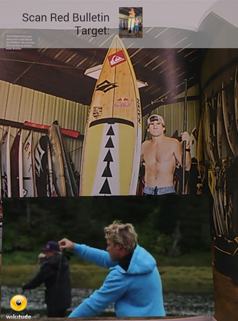
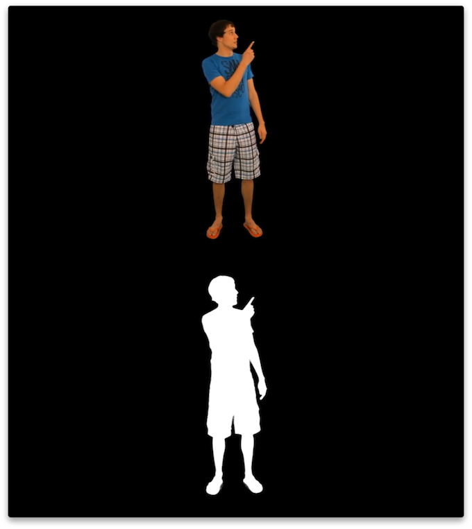
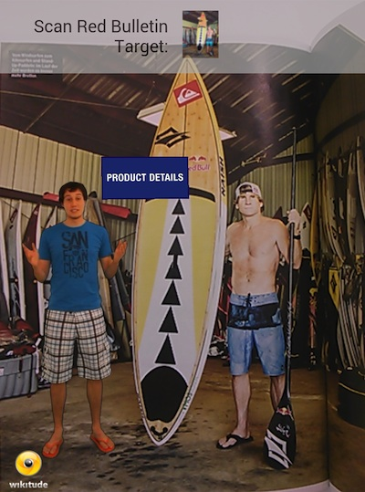
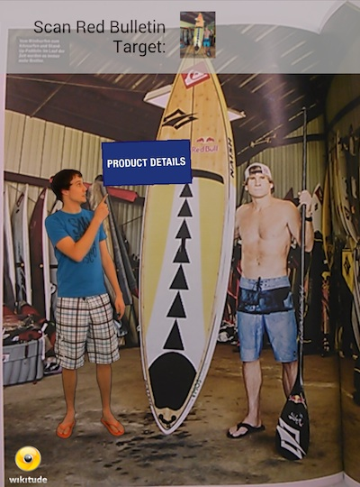

Video Drawables
Besides images, text and HTML content you are able to display videos in augmented reality using the Wikitude SDK. With the help of AR.VideoDrawables you can add a video on top of any target image (AR.Trackable2DObject) or have it displayed at any geo location (AR.GeoObject). Like any other drawable you can position, scale, rotate and change the opacity of the video drawable.
To view the sample you can use the image in this PDF on page 2
Supported Devices
In general, video drawables are fully supported on devices running iOS 6+ and Android 4.0+. Other devices will still play back the video but only in fullscreen mode as a fall-back solution.
- iOS 6.0 or newer: full support
- Android 4.0 or newer: full support
- Android 3.x or older: only fullscreen videos
The Wikitude SDK is detecting the appropriate mode accordingly.
Supported Video Codecs and Hosting Services
To support all platforms make sure to use a H.264 encoded video with a maximum resolution of 720p (1280x720 pixel).
H.264 defines different profiles. Make sure that you are using either one of the following
- Baseline
- Extended
- Main
If the profile differs Android devices will most certainly misbehave (fail to play or crash entirely) when playing back those videos.
Keep in mind that URLs from video hosting services need to point directly to the H.264 encoded video file. Standard YouTube and Vimeo URLs (like http://www.youtube.com/watch?v=bX98XNv8VL4) will not work for this purpose.
If you like to add a YouTube video, which is then played full-screen in the native player, rather use an AR.ImageDrawable showing a poster or play-button and add the URL to the YouTube video to the onClick trigger. Similar to what we do in the image recognition sample.
Video Sample
The following examples will demonstrate how to choose a proper video and how to augment a target image. Furthermore it shows how to react on playback states and concludes with how to use transparent videos.
This sample consists of four parts
- Select a Video and add it to a Target Image
- Control Video Playback
- Snapping Video
- Bonus: Transparent Video
Select a Video and add it to a Target Image (1/4)
The video we use for this example is "video.mp4". As with all resources the video can be loaded locally from the application bundle or remotely from any server. In this example the video file is already bundled with the application.
To view the sample you can use the images in this PDF on page 2 and page 3.
With the video URL at hand the drawable is created as follows:
// Create video drawable
var video = new AR.VideoDrawable("assets/video.mp4", 0.5, {
offsetX: 0.2,
offsetY: 0.2
});The URL and the size are required when creating a new AR.VideoDrawable. Optionally the offsetX and offsetY parameters are set to position the video on the target. The values for the offsets are again in SDUs (more information on the concept of SDUs here).
Adding the video to the target image is straight forward and similar like adding any other drawable to an image target.
var pageOne = new AR.Trackable2DObject(this.tracker, "*", {
drawables: {
cam: video
},
onEnterFieldOfVision: function onEnterFieldOfVisionFn () {
video.play(-1);
}
});
To start the video immediately after the target is recognized we call play inside the onEnterFieldOfVision trigger. Supplying -1 to play tells the Wikitude SDK to loop the video infinitely. Choose any positive number to re-play it multiple times.
Note that we're using the wildcard *as the target name. This indicates that the trackable will match any target that is defined in the supplied tracker.
Control Video Playback (2/4)
The class AR.VideoDrawable offers functions and triggers to control playback of the video and get notified of playback states. The following example makes use of the triggers and states to display an image of a play button on top of the target. Once the user clicks the play button the video starts to play. Additionally we pause and resume the video whenever the target is lost so the user does not miss any video content when looking away.
To view the sample you can use the image in this PDF on page 2
// Create video drawable
var video = new AR.VideoDrawable("assets/video.mp4", 0.5, {
offsetX: 0.2,
offsetY: 0.2,
onLoaded: function videoLoaded() {
playButton.enabled = true;
},
onPlaybackStarted: function videoPlaying () {
playButton.enabled = false;
video.enabled = true;
},
onFinishedPlaying: function videoFinished () {
playButton.enabled = true;
video.playing = false;
video.enabled = false;
},
onClick: function videoClicked () {
if (video.playing) {
video.pause();
video.playing = false;
playButton.enabled = true;
} else {
video.resume();
video.playing = true;
playButton.enabled = true;
}
}
});As before the video is positioned on the target with the offsetX and offsetY properties. Additionally functions are assigned to the onLoaded, onPlaybackStarted and onFinishedPlaying triggers. The onLoaded trigger fires once the video is ready for playback and the playButton is enabled. The playButton is an AR.ImageDrawable defined as follows:
// Create play button
var playButtonImg = new AR.ImageResource("assets/playButton.png");
var playButton = new AR.ImageDrawable(playButtonImg, 0.2, {
enabled: false,
onClick: function playButtonClicked() {
video.play(1);
video.playing = true;
},
offsetX: video.offsetX,
offsetY: video.offsetY
});Once the user clicks the button the video is played once: video.play(1). Starting the playback fires the onPlaybackStarted trigger that in this example hides the playButton. When playback finishes the onFinishedPlaying trigger is called that shows the playButton again.
To give the user the possibility to pause the video the AR.VideoDrawable's click trigger is used. If the video is playing and the user is clicking the function pause() is called which then pauses playback. Clicking the video again resumes playback.
Similar to the user clicking on the video we want to pause/resume the playback if the target image is lost - as this means the user is currently not actively watching the video. To accomplish this the onEnterFieldOfVision and onExitFieldOfVision triggers of the AR.Trackable2DObject are used:
var pageOne = new AR.Trackable2DObject(this.tracker, "*", {
drawables: {
cam: [video, playButton]
},
onEnterFieldOfVision: function onEnterFieldOfVisionFn () {
if (video.playing) {
vide.pause();
}
},
onExitFieldOfVision: function onExitFieldOfVisionFn () {
if (video.playing) {
video.resume();
}
}
});This concludes the example showing you how to control the playback of a AR.VideoDrawable. Have a look at the API Reference for more details on each of the functions and triggers.
Snapping Video (3/4)
In the previous example we used several triggers to pause and resume video playback when the target image is lost so that the user doesn't miss any video content while looking away. In this example we take this approach a little further and do not pause and resume video playback but instead snap the video onto the screen so that it is still visible even when the target image is lost.
To do so the AR.Trackable2DObject offers several snapToScreen settings. In this example we use the snapToScreen.enabledOnExitFieldOfVision property to automatically snap all cam drawables onto the screen when the onExitFieldOfVision event occurs. To disable snapping when the target image is visible again we use the snapToScreen.enabled property and set it to false in the onEnterFieldOfVision event. Doing so will display all cam drawables on the target image again.
this.pageOne = new AR.Trackable2DObject(this.tracker, "*", {
drawables: {
cam: [this.video, playButton]
},
onEnterFieldOfVision: function onEnterFieldOfVision() {
World.pageOne.snapToScreen.enabled = false;
},
snapToScreen: {
enabledOnExitFieldOfVision: true,
snapContainer: document.getElementById('snapContainer')
}
});The snap position is defined through a div element in your HTML source. The position and size of the div will affect the appearance of all cam drawables in the snapped state. It's important to update the div for both orientations, portrait and landscape, so that the augmentations will appear as expected. This example uses css to adopt the div for different device orientations.
Bonus: Transparent video (4/4)
This bonus example shows you how to add transparent videos on top of a target. Transparent videos require some extra preparation work.
Summarizing the required steps, here is what you need to do in order to use transparent videos in a simple list. We are describing each of the steps in more detail.
- Produce a green screen (chroma key) video
- Edit that video using standard video processing software and remove the green screen. Export your result into a file format, which can handle alpha channel information (e.g. Apple PreRes 4444)
- Convert the video from step 2 using the script in the tools folder
- Add it to a target image
Producing a transparent video is usually done using a green screen for filming and a technique called chroma key to replace the green background with transparency. Extensive information is available on the internet that should help you get started on this topic.
There are different video codecs that support alpha channels for motion picture and most of them will work as your raw material. We have extensively tested Apple ProRes 4444 codec for our own development and were satisfied with the results.
The Wikitude SDK can only render H.264 encoded videos, which is a codec that in practice does not support an alpha channel. The solution here is to include in the alpha channel in a separate (visible) part of the video. The video is split vertically consisting of a color and a alpha channel in the final video below each other. The following image shows how the preprocessing result should look like.

The upper half of the image transports the color information for the final video while the lower half includes a grayscale representation of the alpha layer. White areas will be fully opaque and black areas will be fully transparent. If you are familiar with Photoshop, think of the lower half as a mask. Resulting videos have an height that is exactly twice as big as the input video.
To convert your raw video to a valid input video for the SDK we need to re-encode the video and automatically create the alpha mask. The script below uses ffmpeg to do so and wraps the necessary commands. Follow these simple steps:
MacOS X
- Open the Terminal application
- Input
cd <SDK>/tools/video/MacOSX. Replace<SDK>with the path to the SDK folder - Execute
sh convert.sh <input video> <output video>. Replace<input video>with the path to your transparent video and<output video>with the path where you want the output video to be stored.
Windows
- Open the Command Line
cd <SDK>\tools\video\Windows. Replace<SDK>with the path to the SDK folder- Execute
convert.bat <input video> <output video>. Replace<input video>with the path to your transparent video and<output video>with the path where you want the output video to be stored.
This creates the required video with a vertically split color and alpha channel.
Adding the transparent H.264 video to a target image is easy and accomplished in the same way as any other video is added. Just make sure to set the isTransparent property of the AR.VideoDrawable to true.
To view the sample you can use the image in this PDF on page 2
 
// Create a transparent video drawable
var video = new AR.VideoDrawable("assets/transparentVideo.mp4", 0.7, {
offsetX: -0.2,
offsetY: -0.12,
isTransparent: true
});